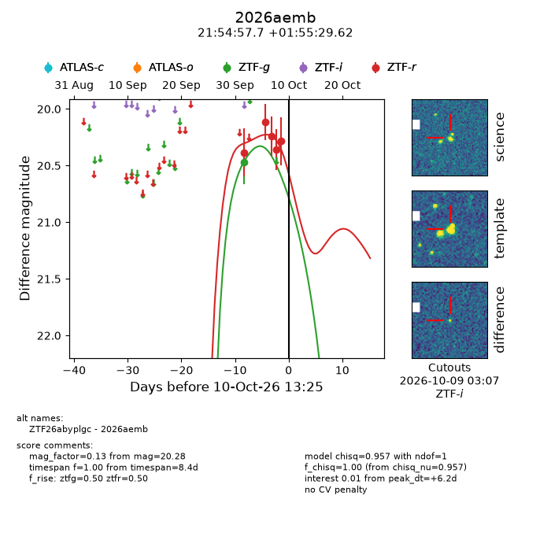
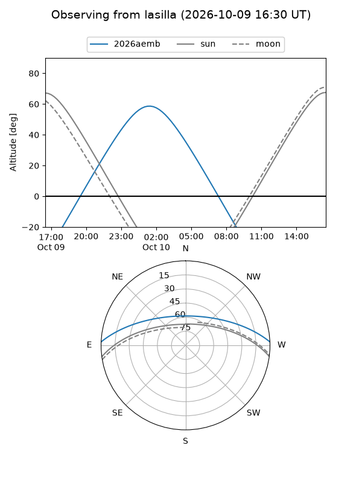
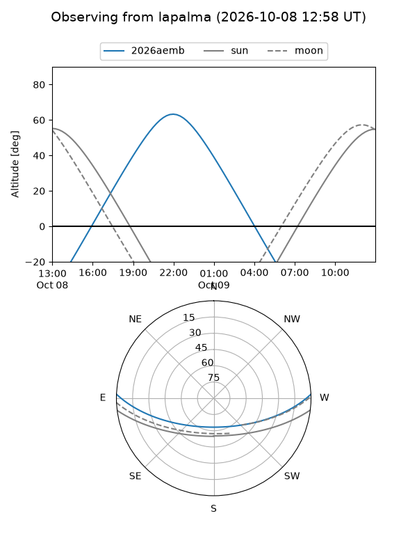
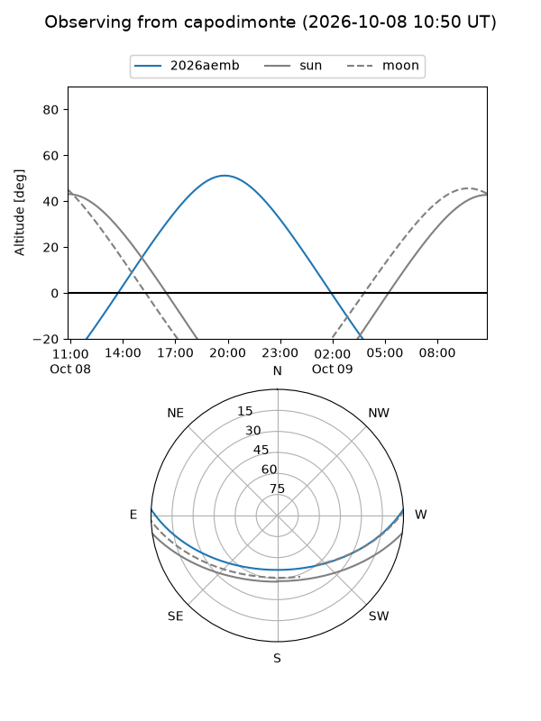
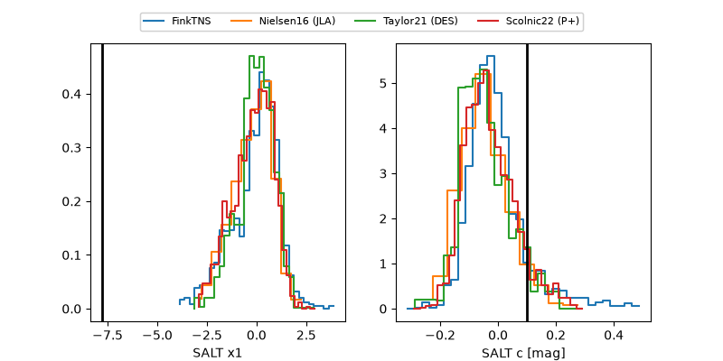

2026aemb
Target 2026aemb at 2026-10-10 13:26
Aliases and brokers:
FINK-ZTF: ztf.fink-portal.org/ZTF26abyplgc
Lasair-ZTF: lasair-ztf.lsst.ac.uk/objects/ZTF26abyplgc
ALeRCE-ZTF: alerce.online/object/ZTF26abyplgc
YSE-PZ: ziggy.ucolick.org/yse/transient_detail/2026aemb
TNS name: wis-tns.org/object/2026aemb
Direct TNS query: direct search
alt names
ZTF26abyplgc (ztf,fink_ztf)
2026aemb (tns,yse)
Coordinates:
equatorial (ra, dec) = 328.7405,+1.92489
equatorial (HMS+DMS) = 21:54:57.71,+01:55:29.62
galactic (l, b) = (60.0985,-38.55323)
Flags:
peak dt: +6.2
Photometry:
last ztfg=20.47, ztfr=20.28
1 ztfg, 5 ztfr detections
Lightcurve

Visibility



Additional plots
